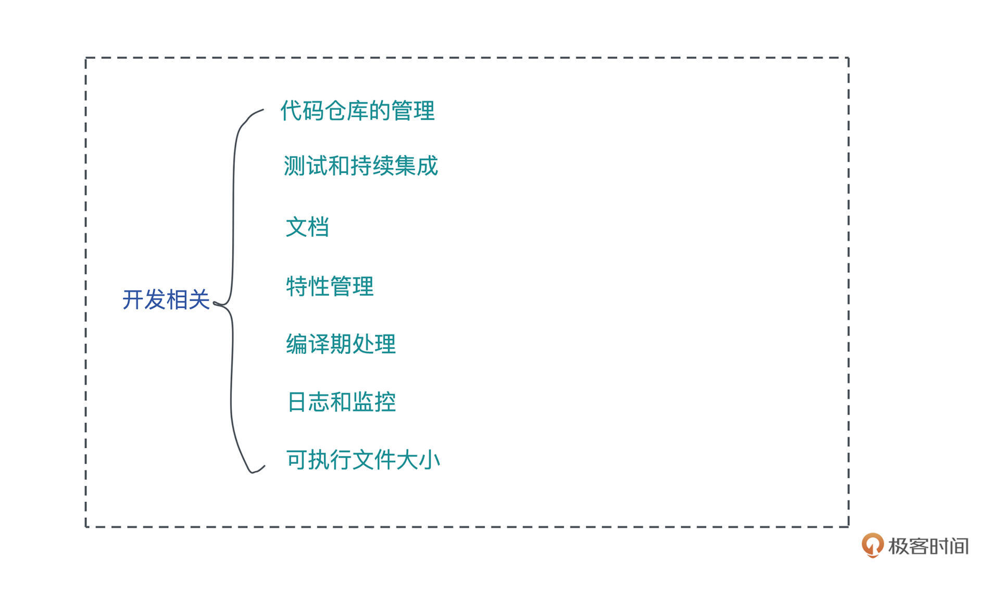

- 00 开篇词 让Rust成为你的下一门主力语言.md.html
- 01 内存：值放堆上还是放栈上，这是一个问题.md.html
- 02 串讲：编程开发中，那些你需要掌握的基本概念.md.html
- 03 初窥门径：从你的第一个Rust程序开始！.md.html
- 04 get hands dirty：来写个实用的CLI小工具.md.html
- 05 get hands dirty：做一个图片服务器有多难？.md.html
- 06 get hands dirty：SQL查询工具怎么一鱼多吃？.md.html
- 07 所有权：值的生杀大权到底在谁手上？.md.html
- 08 所有权：值的借用是如何工作的？.md.html
- 09 所有权：一个值可以有多个所有者么？.md.html
- 10 生命周期：你创建的值究竟能活多久？.md.html
- 11 内存管理：从创建到消亡，值都经历了什么？.md.html
- 12 类型系统：Rust的类型系统有什么特点？.md.html
- 13 类型系统：如何使用trait来定义接口？.md.html
- 14 类型系统：有哪些必须掌握的trait？.md.html
- 15 数据结构：这些浓眉大眼的结构竟然都是智能指针？.md.html
- 16 数据结构：Vec_T_、&[T]、Box_[T]_ ，你真的了解集合容器么？.md.html
- 17 数据结构：软件系统核心部件哈希表，内存如何布局？.md.html
- 18 错误处理：为什么Rust的错误处理与众不同？.md.html
- 19 闭包：FnOnce、FnMut和Fn，为什么有这么多类型？.md.html
- 20 4 Steps ：如何更好地阅读Rust源码？.md.html
- 21 阶段实操（1）：构建一个简单的KV server-基本流程.md.html
- 22 阶段实操（2）：构建一个简单的KV server-基本流程.md.html
- 23 类型系统：如何在实战中使用泛型编程？.md.html
- 24 类型系统：如何在实战中使用trait object？.md.html
- 25 类型系统：如何围绕trait来设计和架构系统？.md.html
- 26 阶段实操（3）：构建一个简单的KV server-高级trait技巧.md.html
- 27 生态系统：有哪些常有的Rust库可以为我所用？.md.html
- 28 网络开发（上）：如何使用Rust处理网络请求？.md.html
- 29 网络开发（下）：如何使用Rust处理网络请求？.md.html
- 30 Unsafe Rust：如何用C++的方式打开Rust？.md.html
- 31 FFI：Rust如何和你的语言架起沟通桥梁？.md.html
- 32 实操项目：使用PyO3开发Python3模块.md.html
- 33 并发处理（上）：从atomics到Channel，Rust都提供了什么工具？.md.html
- 34 并发处理（下）：从atomics到Channel，Rust都提供了什么工具？.md.html
- 35 实操项目：如何实现一个基本的MPSC channel？.md.html
- 36 阶段实操（4）：构建一个简单的KV server-网络处理.md.html
- 37 阶段实操（5）：构建一个简单的KV server-网络安全.md.html
- 38 异步处理：Future是什么？它和async_await是什么关系？.md.html
- 39 异步处理：async_await内部是怎么实现的？.md.html
- 40 异步处理：如何处理异步IO？.md.html
- 41 阶段实操（6）：构建一个简单的KV server-异步处理.md.html
- 42 阶段实操（7）：构建一个简单的KV server-如何做大的重构？.md.html
- 43 生产环境：真实世界下的一个Rust项目包含哪些要素？.md.html
- 44 数据处理：应用程序和数据如何打交道？.md.html
- 45 阶段实操（8）：构建一个简单的KV server-配置_测试_监控_CI_CD.md.html
- 46 软件架构：如何用Rust架构复杂系统？.md.html
- 加餐 Rust2021版次问世了！.md.html
- 加餐 代码即数据：为什么我们需要宏编程能力？.md.html
- 加餐 宏编程（上）：用最“笨”的方式撰写宏.md.html
- 加餐 宏编程（下）：用 syn_quote 优雅地构建宏.md.html
- 加餐 愚昧之巅：你的Rust学习常见问题汇总.md.html
- 加餐 期中测试：参考实现讲解.md.html
- 加餐 期中测试：来写一个简单的grep命令行.md.html
- 加餐 这个专栏你可以怎么学，以及Rust是否值得学？.md.html
- 大咖助场 开悟之坡（上）：Rust的现状、机遇与挑战.md.html
- 大咖助场 开悟之坡（下）：Rust的现状、机遇与挑战.md.html
- 特别策划 学习锦囊（一）：听听课代表们怎么说.md.html
- 特别策划 学习锦囊（三）：听听课代表们怎么说.md.html
- 特别策划 学习锦囊（二）：听听课代表们怎么说.md.html
- 用户故事 绝望之谷：改变从学习开始.md.html
- 用户故事 语言不仅是工具，还是思维方式.md.html
- 结束语 永续之原：Rust学习，如何持续精进？.md.html
- 捐赠
43 生产环境：真实世界下的一个Rust项目包含哪些要素？
你好，我是陈天。
随着我们的实战项目 KV server 接近尾声，课程也到了收官阶段。掌握一门语言的特性，能写出应用这些特性解决一些小问题的代码，算是初窥门径，就像在游泳池里练习冲浪；真正想把语言融会贯通，还要靠大风大浪中的磨练。所以接下来的三篇文章，我们会偏重了解真实的 Rust 应用环境，看看如何用 Rust 构建复杂的软件系统。
今天，我们首先来学习真实世界下的一个 Rust 项目，应该包含哪些要素。主要介绍和开发阶段相关的内容，包括：代码仓库的管理、测试和持续集成、文档、特性管理、编译期处理、日志和监控，最后会顺便介绍一下如何控制 Rust 代码编译出的可执行文件的大小。

代码仓库的管理
我们先从一个代码仓库的结构和管理入手。之前介绍过，Rust 支持 workspace，可以在一个 workspace 下放置很多 crates。不知道你有没有发现，这门课程在GitHub 上的 repo，就把每节课的代码组织成一个个 crate，放在同一个 workspace 中。

在构建应用程序或者服务的时候，我们要尽量把各个模块划分清楚，然后用不同的 crate 实现它们。这样，一来增量编译的效率更高（没有改动的 crate 无需重编），二来可以通过 crate 强制为模块划分边界，明确公开的接口和私有接口。
一般而言，除了代码仓库的根目录有 README.md.html 外，workspace 下的每个 crate 也最好要有 README.md.html 以及 examples，让使用者可以很清晰地理解如何使用这个 crate。如果你的项目的构建过程不是简单通过 cargo build 完成的，建议提供 Makefile 或者类似的脚本来自动化本地构建的流程。
当我们往代码仓库里提交代码时，应该要在本地走一遍基本的检查，包括代码风格检查、编译检查、静态检查，以及单元测试，这样可以最大程度保证每个提交都是完备的，没有基本错误的代码。
如果你使用 Git 来管理代码仓库，那么可以使用 pre-commit hook。一般来说，我们不必自己撰写 pre-commit hook 脚本，可以使用 pre-commit 这个工具。下面是我在 tyrchen/geektime-rust 中使用的 pre-commit 配置，供你参考：
❯ cat .pre-commit-config.yaml
fail_fast: false
repos:
- repo: <https://github.com/pre-commit/pre-commit-hooks>
rev: v2.3.0
hooks:
- id: check-byte-order-marker
- id: check-case-conflict
- id: check-merge-conflict
- id: check-symlinks
- id: check-yaml
- id: end-of-file-fixer
- id: mixed-line-ending
- id: trailing-whitespace
- repo: <https://github.com/psf/black>
rev: 19.3b0
hooks:
- id: black
- repo: local
hooks:
- id: cargo-fmt
name: cargo fmt
description: Format files with rustfmt.
entry: bash -c 'cargo fmt -- --check'
language: rust
files: \.rs$
args: []
- id: cargo-check
name: cargo check
description: Check the package for errors.
entry: bash -c 'cargo check --all'
language: rust
files: \.rs$
pass_filenames: false
- id: cargo-clippy
name: cargo clippy
description: Lint rust sources
entry: bash -c 'cargo clippy --all-targets --all-features --tests --benches -- -D warnings'
language: rust
files: \.rs$
pass_filenames: false
- id: cargo-test
name: cargo test
description: unit test for the project
entry: bash -c 'cargo test --all-features --all'
language: rust
files: \.rs$
pass_filenames: false
你在根目录生成 .pre-commit-config.yaml 后，运行 pre-commit install，以后 git commit 时就会自动做这一系列的检查，保证提交代码的最基本的正确性。
除此之外，你的代码仓库在根目录下最好还声明一个 deny.toml，使用 cargo-deny 来确保你使用的第三方依赖没有不该出现的授权（比如不使用任何 GPL/APGL 的代码）、没有可疑的来源（比如不是来自某个 fork 的 GitHub repo 下的 commit），以及没有包含有安全漏洞的版本。
cargo-deny 对于生产环境下的代码非常重要，因为现代软件依赖太多，依赖树过于庞杂，靠人眼是很难审查出问题的。通过使用 cargo-deny，我们可以避免很多有风险的第三方库。
测试和持续集成
在课程里，我们不断地在项目中强调单元测试的重要性。单元测试除了是软件质量保证的必要手段外，还是接口设计和迭代的最佳辅助工具。
良好的架构、清晰的接口隔离，必然会让单元测试变得容易直观；而写起来别扭，甚至感觉很难撰写的单元测试，则是在警告你软件的架构或者设计出了问题：要么是模块之间耦合性太强（状态纠缠不清），要么是接口设计得很难使用。
在 Rust 下撰写单元测试非常直观，测试代码和模块代码放在同一个文件里，很容易阅读和互相印证。我们之前已经写过大量这类的单元测试。
不过还有一种单元测试是和文档放在一起的，doctest，如果你在学习这门课的过程中已经习惯遇到问题就去看源代码的话，会看到很多类似这样的 doctest，比如下面的 HashMap::get 方法的 doctest：
/// Returns a reference to the value corresponding to the key.
///
/// The key may be any borrowed form of the map's key type, but
/// [`Hash`] and [`Eq`] on the borrowed form *must* match those for
/// the key type.
///
/// # Examples
///
/// ```
/// use std::collections::HashMap;
///
/// let mut map = HashMap::new();
/// map.insert(1, "a");
/// assert_eq!(map.get(&1), Some(&"a"));
/// assert_eq!(map.get(&2), None);
/// ```
#[stable(feature = "rust1", since = "1.0.0")]
#[inline]
pub fn get<Q: ?Sized>(&self, k: &Q) -> Option<&V>
where
K: Borrow<Q>,
Q: Hash + Eq,
{
self.base.get(k)
}
在之前的代码中，虽然我们没有明确介绍文档注释，但想必你已经知道，可以通过 “///” 来撰写数据结构、trait、方法和函数的文档注释。
这样的注释可以用 markdown 格式撰写，之后通过 “cargo doc” 编译成类似你在 docs.rs 下看到的文档。其中，markdown 里的代码就会被编译成 doctest，然后在 “cargo test” 中进行测试。
除了单元测试，我们往往还需要集成测试和性能测试。在后续 KV server 的实现过程中，我们会引入集成测试来测试服务器的基本功能，以及性能测试来测试 pub/sub 的性能。这个在遇到的时候再详细介绍。
在一个项目的早期，引入持续集成非常必要，哪怕还没有全面的测试覆盖。
如果说 pre-commit 是每个人提交代码的一道守卫，避免一些基本的错误进入到代码库，让大家在团队协作做代码审阅时，不至于还需要关注基本的代码格式；那么，持续集成就是在团队协作过程中的一道守卫，保证添加到 PR 里或者合并到 master 下的代码，在特定的环境下，也是没有问题的。
如果你用 GitHub 来管理代码仓库，可以使用 github workflow 来进行持续集成，比如下面是一个最基本的 Rust github workflow 的定义：
❯ cat .github/workflows/build.yml
name: build
on:
push:
branches:
- master
pull_request:
branches:
- master
jobs:
build-rust:
strategy:
matrix:
platform: [ubuntu-latest, windows-latest]
runs-on: ${{ matrix.platform }}
steps:
- uses: actions/checkout@v2
- name: Cache cargo registry
uses: actions/cache@v1
with:
path: ~/.cargo/registry
key: ${{ runner.os }}-cargo-registry
- name: Cache cargo index
uses: actions/cache@v1
with:
path: ~/.cargo/git
key: ${{ runner.os }}-cargo-index
- name: Cache cargo build
uses: actions/cache@v1
with:
path: target
key: ${{ runner.os }}-cargo-build-target
- name: Install stable
uses: actions-rs/toolchain@v1
with:
profile: minimal
toolchain: stable
override: true
- name: Check code format
run: cargo fmt -- --check
- name: Check the package for errors
run: cargo check --all
- name: Lint rust sources
run: cargo clippy --all-targets --all-features --tests --benches -- -D warnings
- name: Run tests
run: cargo test --all-features -- --test-threads=1 --nocapture
- name: Generate docs
run: cargo doc --all-features --no-deps
我们会处理代码格式，做基本的静态检查、单元测试和集成测试，以及生成文档。
文档
前面说了，Rust 代码的文档注释可以用 “///” 来标注。对于我们上一讲 KV server 的代码，可以运行 “cargo doc” 来生成对应的文档。
注意，在 cargo doc 时，不光你自己撰写的 crate 的文档会被生成，所有在依赖里使用到的 crate 的文档也会一并生成，所以如果你想在没有网的情况下，参考某些引用了的 crate 文档，可以看本地生成的文档。下图是上一讲的 KV server 文档的截图：
大多数时候，你只需要使用 “///” 来撰写文档就够用了，不过如果你需要撰写 crate 级别的文档，也就是会显示在 crate 文档主页上的内容，可以在 lib.rs 或者 main.rs 的开头用 “//!”，比如：
//! 这是 crate 文档
如果你想强迫自己要撰写每个公共接口的文档，保持系统有良好的文档覆盖，那么可以使用 ![deny(missing_docs)]。这样，任何时候只要你忘记撰写文档，都会产生编译错误。如果你觉得编译错误太严格，也可以用编译报警：![warn(missing_docs]。之前我们阅读过 bytes crate 的源码，可以再回过头来看看它的 lib.rs 的开头。-
在介绍测试的时候，我们提到了文档测试。
在文档中撰写样例代码并保证这个样例代码可以正常运行非常重要，因为使用者在看你的 crate 文档时，往往先会参考你的样例代码，了解接口如何使用。大部分时候，你的样例代码该怎么写就怎么写，但是，在进行异步处理和错误处理时，需要稍微做一些额外工作。
我们来看一个文档里异步处理的例子（代码）：
use std::task::Poll;
use futures::{prelude::*, stream::poll_fn};
/// fibnacci 算法
/// 示例：
/// ```
/// use futures::prelude::*;
/// use playground::fib; // playground crate 名字叫 playground
/// # futures::executor::block_on(async {
/// let mut st = fib(10);
/// assert_eq!(Some(2), st.next().await);
/// # });
/// ```
pub fn fib(mut n: usize) -> impl Stream<Item = i32> {
let mut a = 1;
let mut b = 1;
poll_fn(move |_cx| -> Poll<Option<i32>> {
if n == 0 {
return Poll::Ready(None);
}
n -= 1;
let c = a + b;
a = b;
b = c;
Poll::Ready(Some(b))
})
}
注意这段代码中的这两句注释：
/// # futures::executor::block_on(async {
/// ...
/// # });
在 /// 后出现了 #，代表这句话不会出现在示例中，但会被包括在生成的测试代码中。之所以需要 block_on，是因为调用我们的测试代码时，需要使用 await，所以需要使用异步运行时来运行它。
实际上，这个的文档测试相当于：
fn main() {
fn _doctest_main_xxx() {
use futures::prelude::*;
use playground::fib; // playground crate 名字叫 playground
futures::executor::block_on(async {
let mut st = fib(10);
assert_eq!(Some(2), st.next().await);
});
}
_doctest_main_xxx()
}
我们再来看一个文档中做错误处理的例子（代码）：
use std::io;
use std::fs;
/// 写入文件
/// 示例：
/// ```
/// use playground::write_file;
/// write_file("/tmp/dummy_test", "hello world")?;
/// # Ok::<_, std::io::Error>(())
/// ```
pub fn write_file(name: &str, contents: &str) -> Result<(), io::Error> {
fs::write(name, contents)
}
这个例子中，我们使用 ? 进行了错误处理，所以需要最后补一句 Ok::<_, io::Error> 来明确返回的错误类型。
如果你想了解更多有关 Rust 文档的内容，可以看 rustdoc book。
特性管理
作为一门编译型语言，Rust 支持条件编译。
通过条件编译，我们可以在同一个 crate 中支持不同的特性（feature），以满足不同的需求。比如 reqwest，它默认使用异步接口，但如果你需要同步接口，你可以使用它的 “blocking” 特性。
在生产环境中合理地使用特性，可以让 crate 的核心功能引入较少的依赖，而只有在启动某个特性的时候，才使用某些依赖，这样可以让最终编译出来的库或者可执行文件尽可能地小。
特性作为高级工具，并不在我们这个课程的范围内，感兴趣的话，你可以看 cargo book 深入了解如何在你的 crate 中使用特性，以及在代码撰写过程中，如何使用相应的宏来做条件编译。
编译期处理
在开发软件系统的时候，我们需要考虑哪些事情需要放在编译期处理，哪些事情放在加载期处理，哪些事情放在运行期处理。
有些事情，我们不一定要放在运行期才进行处理，可以在编译期就做一些预处理，让数据能够以更好的形式在运行期被使用。
比如在做中文繁简转换的时候，可以预先把单字对照表从文件中读取出来，处理成 Vec<(char, char)>，然后生成 bincode 存入到可执行文件中。我们看这个例子（代码）：
use std::io::{self, BufRead};
use std::{env, fs::File, path::Path};
fn main() {
// 如果 build.rs 或者繁简对照表文件变化，则重新编译
println!("cargo:rerun-if-changed=build.rs");
println!("cargo:rerun-if-changed=src/t2s.txt");
// 生成 OUT_DIR/map.bin 供 lib.rs 访问
let out_dir = env::var_os("OUT_DIR").unwrap();
let out_file = Path::new(&out_dir).join("map.bin");
let f = File::create(&out_file).unwrap();
let v = get_kv("src/t2s.txt");
bincode::serialize_into(f, &v).unwrap();
}
// 把 split 出来的 &str 转换成 char
fn s2c(s: &str) -> char {
let mut chars = s.chars();
let c = chars.next().unwrap();
assert!(chars.next().is_none());
assert!(c.len_utf8() == 3);
c
}
// 读取文件，把每一行繁简对照的字符串转换成 Vec<(char, char)>
fn get_kv(filename: &str) -> Vec<(char, char)> {
let f = File::open(filename).unwrap();
let lines = io::BufReader::new(f).lines();
let mut v = Vec::with_capacity(4096);
for line in lines {
let line = line.unwrap();
let kv: Vec<_> = line.split(' ').collect();
v.push((s2c(kv[0]), s2c(kv[1])));
}
v
}
通过这种方式，我们在编译期额外花费了一些时间，却让运行期的代码和工作大大简化（代码）：
static MAP_DATA: &[u8] = include_bytes!(concat!(env!("OUT_DIR"), "/map.bin"));
lazy_static! {
/// state machine for the translation
static ref MAP: HashMap<char, char> = {
let data: Vec<(char, char)> = bincode::deserialize(MAP_DATA).unwrap();
data.into_iter().collect()
};
...
}
日志和监控
我们目前撰写的项目，都还只有少量的日志。但对于生产环境下的项目来说，这远远不够。我们需要详尽的、不同级别的日志。
这样，当系统在运行过程中出现问题时，我们可以通过日志得到足够的线索，从而找到问题的源头，进而解决问题。而且在一个分布式系统下，我们往往还需要把收集到的日志集中起来，进行过滤和查询。
除了日志，我们还需要收集系统的行为数据和性能指标，来了解系统运行时的状态。
Rust 有不错的对 prometheus 的支持，比如 rust-prometheus 可以帮助你方便地收集和发送各种指标；而 opentelemetry-rust 更是除了支持 prometheus 外，还支持很多其他商业/非商业的监控工具，比如 datadog，比如 jaeger。
之后我们还会有一讲来让 KV server 更好地处理日志和监控，并且用 jaeger 进行性能分析，找到代码中的性能问题。
可执行文件大小
最后，我们来谈谈可执行文件的大小。
绝大多数使用场景，我们使用 cargo build --release 就够了，生成的 release build 可以用在生产环境下，但有些情况，比如嵌入式环境，或者用 Rust 构建提供给 Android/iOS 的包时，需要可执行文件或者库文件尽可能小，避免浪费文件系统的空间，或者网络流量。
此时，我们需要一些额外的手段来优化文件尺寸。你可以参考 min-sized-rust 提供的方法进行处理。
小结
今天我们蜻蜓点水讨论了，把一个 Rust 项目真正应用在生产环境下，需要考虑的诸多问题。之后会围绕着 KV server 来实践这一讲中我们聊到的内容。-
做一个业余项目和做一个实际的、要在生产环境中运行的项目有很大不同。业余项目我们主要关注需求是不是得到了妥善的实现，主要关注的是构建的流程；而在实际项目中，我们除了需要关注构建，还有测量和学习的完整开发流程。

看这张图，一个项目的整体开发流程相信是你所熟悉，包括初始想法、需求分析、排期、设计和实现、持续集成、代码审查、测试、发布、分阶段上线、实验、监控、数据分析等部分，我把它贯穿到精益创业（Lean Startup）“构建 - 测量 - 学习”（Build - Measure - Learn）的三个环节中。
今天介绍的代码仓库的管理、测试和持续集成、文档、日志和监控，和这个流程中的很多环节都有关系，你可以对照着自己公司的开发流程，想一想如何在这些流程中更好地使用 Rust。
思考题
在上面完整开发流程图中，今天只涉及了主要的部分。你可以结合自己现有工作的流程，思考一下如果把 Rust 引入到你的工作中，哪些流程能够很好地适配，哪些流程还需要额外的工作？
欢迎在留言区分享你的思考，感谢你的收听，如果觉得有收获，也欢迎你分享给身边的朋友，邀他一起讨论。你完成了Rust学习的第43次打卡啦，我们下节课见。
© 2019 - 2023 Liangliang Lee. Powered by gin and hexo-theme-book.